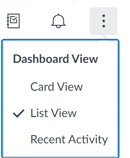
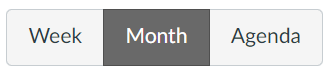
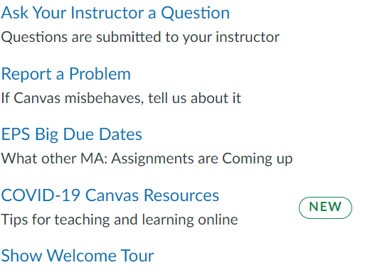

Now that you are apart of EPS, obviously you are going to have some homework! Canvas is a great tool that we use to track our homework assignments, classwork assignments, future tests, class content/syllabus, and so much more. However, it can be a little tricky to work your way around it if you are new. Hopefully, you can use this page to give you a helping hand in figuring your way around canvas to keep you ontop of your assignments!
For easy access, you can click on this button to take you to your dashboard and automatically to today's date. The Dashboard section is a page where you can either look at all of your current class in card veiw, or look at the assignments you or your teachers have put for you by the day. To switch between veiws you can just click the 3 dots in the top right:
You can also look at your "Recent Activity" and a To-Do List on your right. Scrolling further down, you can see what assignments teachers have given you feedback on in the "Recent Feedback".
In your account there are many options of things that correspond to your account. They include: a logout option, Four11 Dashboard, Notifications, Files, Settings, ePortfolios, Online Course Requests, QR for Mobile Login, Global Announcements, and the option to use High Contrast.
This button is just another way to get to your dashboard/refresh it to today's date.
Here, you can look at all the different courses that you are taking right now, there even is a "All Courses" button where you can take a look at previous courses that you have taken, however you should have none of those if you are an incoming freshman.
With this button you can take a look at all the groups that teachers have put together/placed you in. For example, if you are doing a group project and only one team member in your group needs to submit, then a teacher might put you in a group for organization.
In this mode you can look at all your homework, classwork, and other assignments in a calendar form. With this feature, and looking in month form, you can take a look at all of your work for your current week, and all of the other weeks in the month. However, there is s till more!
With the different modes you can take a look at your assignments in many ways. In week, you can see you assignments in a veiw similar to calendar, but only shows the assignments of that current week. In agenda, you can look at your assignments in vertical order (very similar to dashboard list veiw).
Inbox allows you to see conversations that teachers might have started with you. Whether that is for missing assignments, changed submittion dates, or any reason that a teacher might want to reach out to you.
Here, you can look at your recent history of all the assignments you have taken a look at recently.
If any of this was hard to understand and you still have quesitons, you can take a look at the "Help" page to see if it proides the answer to your questions. It can lead you to many other resources in the following:
Take a look at the YouTube video below if you still have questions, it might help answer them.